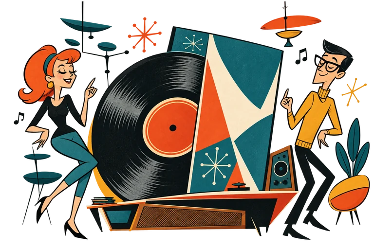
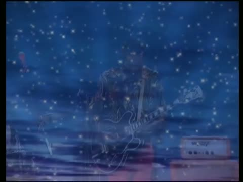

ARCHIVE SELECTIONChecking live feed…


Still unavailable
BROWSE BY YEAR
View allChoose a decade
Loading decade counts…
LIVE STATUS
Status detailsChecking connection…
Reading current song from the public feed.


Still unavailable
Loading decade counts…
Reading current song from the public feed.